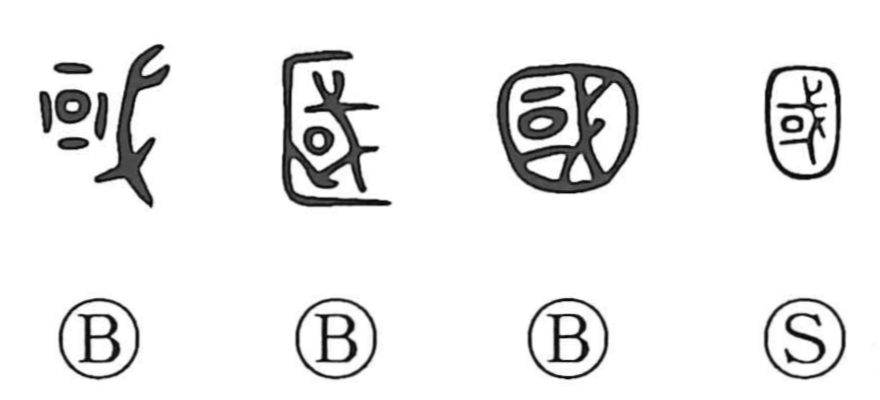

Explanation
国 abbreviates 國, which encloses 或 within an outer wall. 或 already pictures a fortified settlement guarded by 戈, a shafted weapon. It is the earlier writing for the defended city.
When 或 came to serve other uses, including ‘or,’ another enclosure was added to distinguish 國. The word first concerns the armed capital or seat of power, then the country organized around it. The city and its defended boundary give a visible centre to the larger domain.
The related 邦 concerns establishing territory through its sacred earth-shrine. 圀, introduced under Empress Wu, instead represents the eight directions within a boundary. These formations offer different ways of describing a political whole; the modern 国 preserves the word in an abbreviated shape.